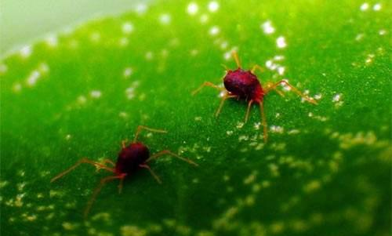
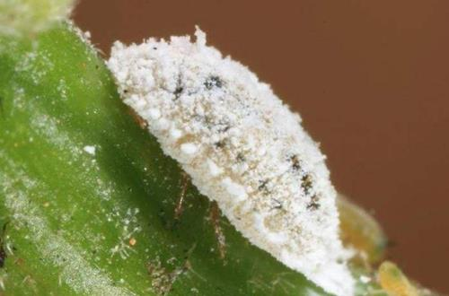
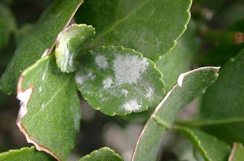

花卉有病虫害怎么治 春天花卉最容易得的几种病虫害
春天万物复苏，虽然到处呈现一片生机勃勃的现象，但在这种现象之下也出现各种虫害，这段时间是花友最为忙碌也是最为忧心的时间，虽然养殖的花草也恢复了生机但也容易出现各种黄叶、虫害、病害的现象。
那么春天植物都容易发现什么病虫害，有没有治疗的办法呢？
一、蚜虫

春天是蚜虫最活跃的一段时间，这段时间各种植物都容易遭受到蚜虫的侵害。这种病虫害会随着暖春的来临而逐步的增加，这时候养花人就要注意了，尤其是养着月季花、扶桑花以及金银花的朋友们就要多费心了。
蚜虫危害的持续性相对会比较高，所以在春天相当长的一段时间内花友们的防范工作却不可掉以轻心。如果出现蚜虫危害的朋友们也不要过于心急，可以使用一些消毒剂消灭蚜虫，比如：亚胺硫磷以及氧化乐果等。如果没有购买消毒剂的朋友也可以选择稀释百倍的中性洗衣粉进行消虫。
二、红蜘蛛
这也是春天最为常见的虫害之一，从每年的四月份起花友们就要格外小心应对对红蜘蛛的防患工作，日常要经常关注花卉卫生的清洁工作，多用水喷洒叶子正反两面都要进行清尘工作。
红蜘蛛主要危害的花卉有：茉莉花，大丽花以及文竹等植物。
三、蚧壳虫
与红蜘蛛相似，蚧壳虫也是春季比较常见的虫害。蚧壳虫相对比较小，日常观察要仔细，多关注下是否植株有虫卵的出现。如果在植株中发现了蚧壳虫卵就要及时的喷洒稀释了一千倍的40%氧化乐果溶液进行消毒。
蚧壳虫主要危害对象：月季花，白玉兰，海桐，黄杨等
四、立枯病以及玫瑰锈病
这两种是春天花卉最常见的疾病。春天温度日渐上升，湿度也逐步增加，这时候刚种植不过几个月的花卉最容易得病。如果花卉出现了立枯病立马用硫酸亚铁或者代森铵液进行灌溉进行救治。如果花卉出现玫瑰锈病则首先观察是否是整体得病还是单单的几片叶子得病，如果单单只是叶片得病那么只要摘除病原体也就是摘掉得锈病的叶片就可以了；假如整体植株得病则采用稀释千倍的15%粉锈宁溶液进行喷洒治疗。
以上就是春季花卉主要常见的病害以及虫害，养花不易，而春季又是个花卉多病的季节，朋友们在养殖花卉的过程中要多几分耐心，得病了也不要过于心急及时的找到的补救办法才是道理。